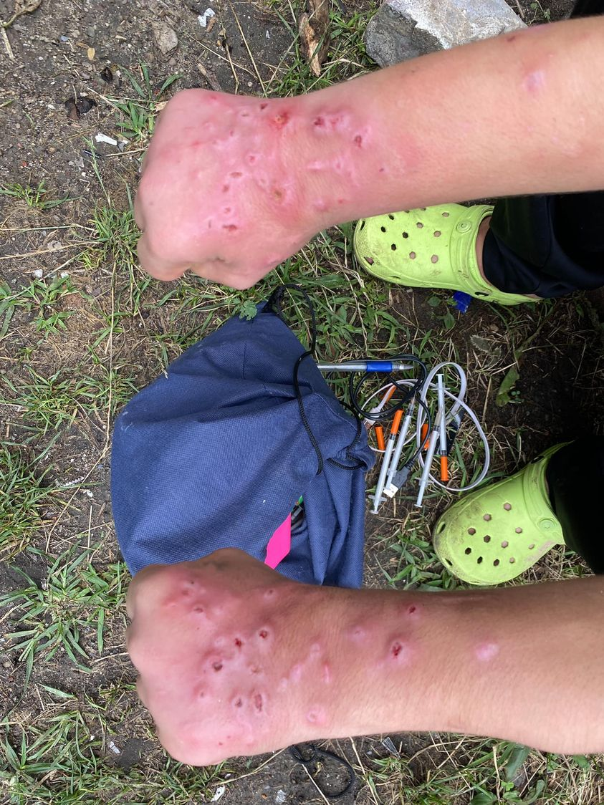

Mobile uploads
I took this picture yesterday.
These are wounds from injection drug use. She says they are getting better.
If I have one overarching message it is to try to understand other people. You don’t have to condone behavior. But understanding is the only path to trying to get better as a society.
Many of you like to tell me drug use and homelessness is a “choice.” These are choices like eating and breathing are a choice. They become requirements for survival.
A homeless woman once told me that you are REQUIRED to use drugs or alcohol when you are homeless. The cold and wet and theft and violence are just too much to withstand without a mind altering substance.
Personally I believe every person is free to make their own choices in life. If you want to use drugs be my guest. Any Existentialist should agree with this theory based on the meaninglessness and pointlessness of life. Even me as a person trying to make a difference in the world sees the Sisyphusian futility of it all. (Right now my biggest motivator for helping homeless people is that I find it fun.)
I also believe drug use causes such a major problem in a person’s life not so much because of the drugs but because how hated and stigmatized drug use makes you in society.
ULTIMATELY, wrestling with drug use is an interesting societal challenge like countless other interesting societal challenges.
Addicts are some of the most clever people you will ever meet. And their addiction is almost always covering up some of the most torturous life pain you will ever witness.
If this group of people interest you there is a great need for just simply being a friend to a couple of these people. It’s free and life changing.